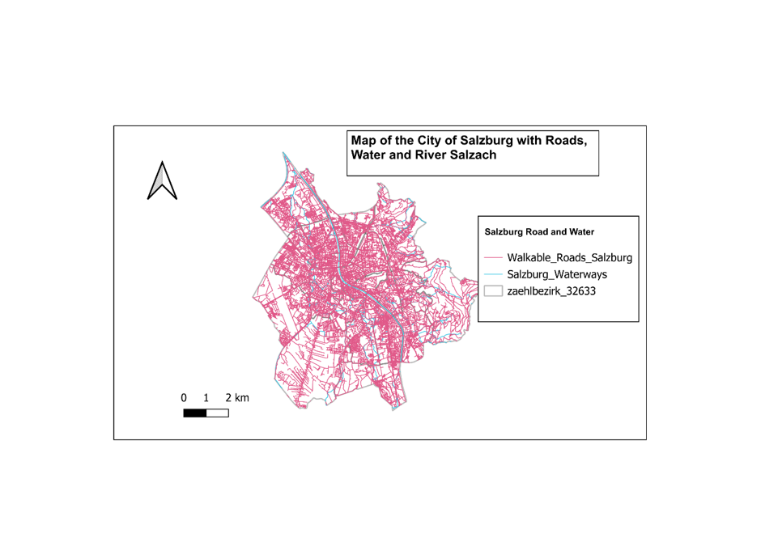
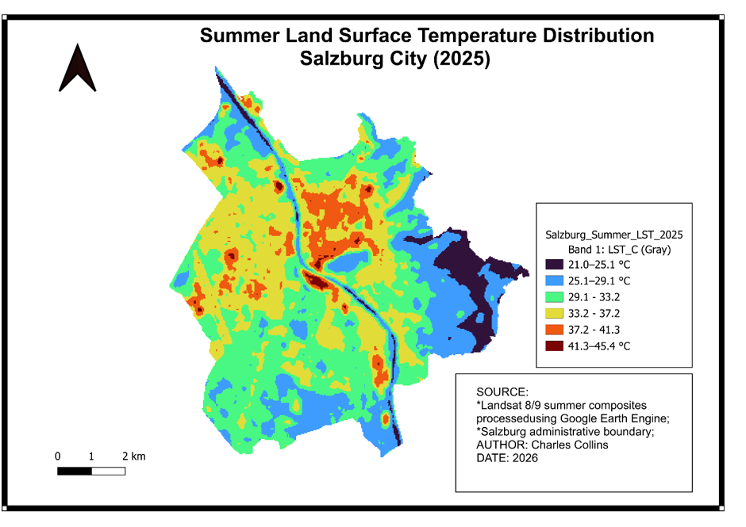
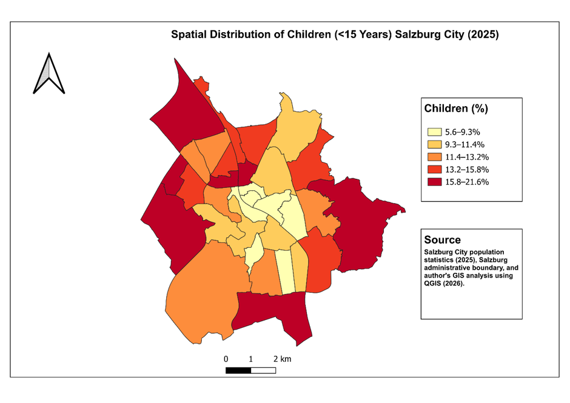
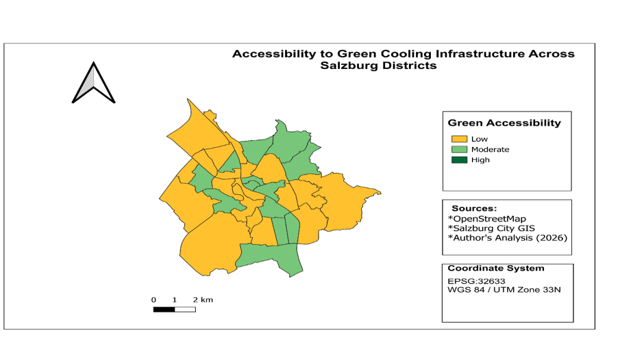
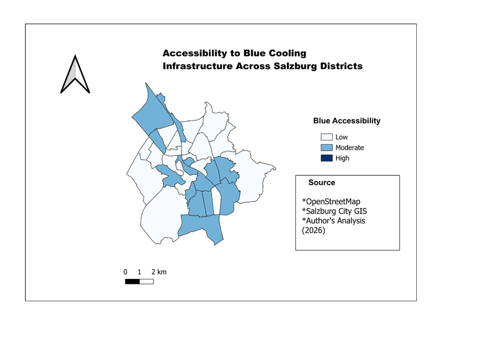
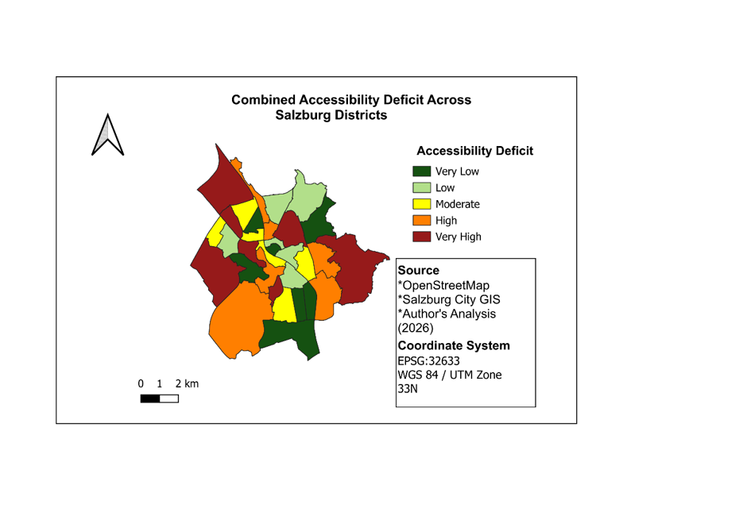

Geospatial Analysis of Urban Heat Risk and Cooling Accessibility for Vulnerable Populations in Salzburg
An integrated GIS and remote-sensing study combining urban heat exposure, demographic vulnerability, land-cover characteristics and accessibility to green and blue cooling infrastructure across Salzburg City, Austria.
Understanding heat risk beyond temperature alone
Urban heat risk is influenced not only by where high temperatures occur, but also by who is exposed, the physical characteristics of the urban environment and whether residents can reach cooling resources.
This study developed an integrated geospatial framework for examining these relationships across Salzburg. Environmental, demographic and accessibility indicators were combined to identify areas where high heat exposure overlaps with greater vulnerability and limited access to cooling infrastructure.
Salzburg City
Salzburg provides a useful setting for urban heat research because its compact built-up areas, transport infrastructure, river corridor, green spaces and surrounding terrain create contrasting local environmental conditions.
The analysis was carried out across 32 census districts (Zählbezirke), allowing environmental and demographic indicators to be compared using a common spatial framework.
The Salzach River and the city's road network were also important components of the accessibility analysis.

Where do heat exposure and vulnerability intersect?
The project investigates how urban heat exposure varies across Salzburg and whether districts containing potentially vulnerable population groups also experience environmental conditions that can increase heat risk.
Particular attention was given to children and older adults, vegetation conditions, built-up intensity and access to green and blue infrastructure that can provide opportunities for cooling during periods of extreme heat.
Integrating multiple spatial datasets
Data Sources
- Landsat 8 and Landsat 9 satellite imagery
- GeoSphere Austria climate records
- Salzburg City demographic data
- OpenStreetMap road and infrastructure data
- Urban green and blue infrastructure datasets
- Building and land-cover information
Software & Methods
- QGIS
- Google Earth Engine
- Remote-sensing image processing
- Raster and vector spatial analysis
- Network and service-area analysis
- Zonal statistics
- Indicator normalization
- Composite spatial index modelling
From raw spatial data to integrated heat-risk assessment
Data Acquisition
Climate, satellite, demographic, land-cover, road, building and cooling-infrastructure datasets were assembled.
Remote Sensing
Landsat imagery was processed to derive Land Surface Temperature and environmental indicators.
Vulnerability
Population indicators were analysed to represent demographic sensitivity to heat.
Accessibility
GIS network analysis was used to evaluate access to green and blue cooling infrastructure.
Integration
Standardized indicators were combined into the Composite Urban Heat Risk Index.
Summer Land Surface Temperature
Land Surface Temperature was derived from Landsat imagery processed through Google Earth Engine to examine the spatial distribution of surface heating across Salzburg.
The 2025 summer result demonstrates substantial spatial variation. Higher surface temperatures are concentrated in several densely developed and impervious areas, while cooler conditions occur around vegetated areas, water corridors and less intensively built locations.


Identifying sensitive population groups
Heat exposure does not affect all population groups equally. The demographic component of the analysis therefore considered population groups that may be more sensitive during periods of extreme heat.
The map illustrates the spatial distribution of children under 15 years across Salzburg. This information was combined with other vulnerability indicators during the integrated risk assessment.
Can residents reach green and blue cooling infrastructure?
Cooling infrastructure was evaluated using GIS-based accessibility analysis. Green spaces and blue infrastructure were considered important environmental resources that can support cooling and heat adaptation.


Identifying underserved districts
Green and blue accessibility indicators were combined to identify districts where residents have comparatively limited access to cooling infrastructure.
Higher accessibility-deficit values indicate areas where opportunities to reach cooling resources are more limited, making accessibility an important component of the overall urban heat-risk framework.

Composite Urban Heat Risk Index (CUHRI)
The final stage integrated heat hazard, demographic sensitivity, vegetation conditions, built-environment characteristics and cooling-accessibility deficit into a Composite Urban Heat Risk Index.
The resulting map provides a district-level representation of relative urban heat risk, ranging from very low to very high. It highlights spatial inequalities that would not be visible from temperature data alone.

What the spatial analysis revealed
Heat is spatially uneven
Surface-temperature patterns vary substantially across Salzburg, with stronger heat exposure in several intensively developed areas.
Vulnerability also varies
Sensitive population groups are unevenly distributed, meaning exposure and vulnerability do not occur uniformly across the city.
Cooling access is unequal
Access to green and blue infrastructure differs among districts, creating areas with comparatively greater cooling-accessibility deficits.
Risk requires integration
Combining environmental, demographic and accessibility indicators provides a more comprehensive understanding of urban heat risk than analysing temperature alone.
Geospatial techniques applied in this project
What I learned
This project strengthened my ability to integrate satellite, climate, demographic, land-use and network datasets within a single geospatial research framework.
It also demonstrated the importance of looking beyond physical heat exposure when assessing urban climate risk. Understanding who is exposed and whether people can access cooling resources provides a stronger basis for identifying priority areas for climate adaptation and urban planning.
← Back to Projects